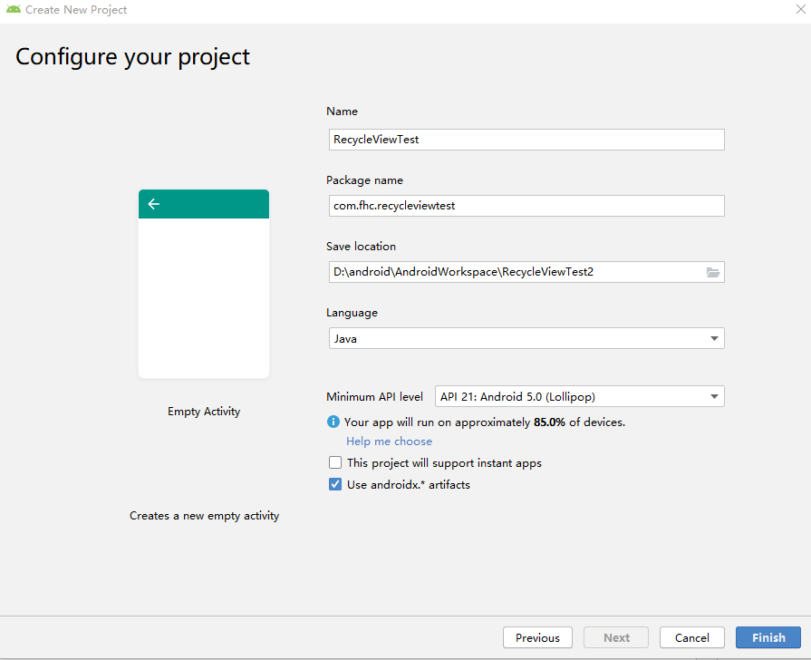
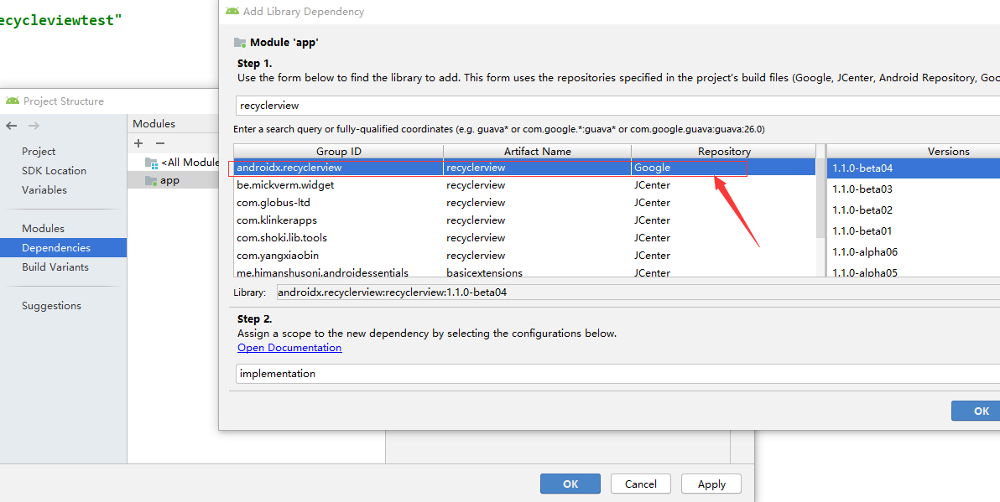

RecycleView使用
1.新建RecycleViewTest项目：

2.添加RecycleView库依赖
鼠标右击选择 " Open Module Settings "选项，然后进行如下操作：

3.创建RecycleView Item布局文件
- layout/recycleview_item.xml
1
2
3
4
5
6
7
8
9
10
11
12
13
14
15
16
17
18
19
20
21
22
23
24
25
26 | <?xml version="1.0" encoding="utf-8"?>
<LinearLayout xmlns:android="http://schemas.android.com/apk/res/android"
xmlns:app="http://schemas.android.com/apk/res-auto"
xmlns:tools="http://schemas.android.com/tools"
android:layout_width="match_parent"
android:layout_height="wrap_content"
android:layout_margin="10dp"
android:orientation="horizontal">
<ImageView
android:id="@+id/imageView"
android:layout_width="wrap_content"
android:layout_height="wrap_content"
tools:srcCompat="@tools:sample/avatars[1]" />
<TextView
android:id="@+id/textView"
android:layout_width="wrap_content"
android:layout_height="wrap_content"
android:layout_marginLeft="30dp"
android:layout_marginTop="40dp"
android:fontFamily="sans-serif-black"
android:text="TextView"
android:textSize="25sp" />
</LinearLayout>
|
4.在layout/activity_main.xml中添加RecycleView组件
1
2
3
4
5
6
7
8
9
10
11
12
13
14
15 | <?xml version="1.0" encoding="utf-8"?>
<androidx.constraintlayout.widget.ConstraintLayout xmlns:android="http://schemas.android.com/apk/res/android"
xmlns:app="http://schemas.android.com/apk/res-auto"
xmlns:tools="http://schemas.android.com/tools"
android:layout_width="match_parent"
android:layout_height="match_parent"
tools:context=".MainActivity">
<androidx.recyclerview.widget.RecyclerView
android:id="@+id/recycleview"
android:layout_width="match_parent"
android:layout_height="match_parent"
tools:listitem="@layout/recycleview_item" />
</androidx.constraintlayout.widget.ConstraintLayout>
|
5.创建Adapter
1
2
3
4
5
6
7
8
9
10
11
12
13
14
15
16
17
18
19
20
21
22
23
24
25
26
27
28
29
30
31
32
33
34
35
36
37
38 | public class MyAdapter extends RecyclerView.Adapter<MyAdapter.ViewHolder> {
@NonNull
@Override
public ViewHolder onCreateViewHolder(@NonNull ViewGroup parent, int viewType) {
View view = LayoutInflater.from(parent.getContext()).inflate(R.layout.recycleview_item,parent,false);
return new ViewHolder(view);
}
@Override
public void onBindViewHolder(@NonNull ViewHolder holder, int position) {
holder.icon.setImageResource(R.drawable.ic_launcher_foreground);
holder.content.setText("Hello it is a test!");
}
@Override
public int getItemCount() {
return 1024;
}
public class ViewHolder extends RecyclerView.ViewHolder{
private ImageView icon;
private TextView content;
public ViewHolder(@NonNull View itemView) {
super(itemView);
icon = itemView.findViewById(R.id.imageView2);
content = itemView.findViewById(R.id.textView2);
}
}
}
|
6.在Activity中使用RecycleView组件
1
2
3
4
5
6
7
8
9
10
11
12
13
14
15
16
17
18
19 | public class MainActivity extends AppCompatActivity {
private RecyclerView recyclerView;
@Override
protected void onCreate(Bundle savedInstanceState) {
super.onCreate(savedInstanceState);
setContentView(R.layout.activity_main);
recyclerView = findViewById(R.id.recycleview);
MyAdapter myAdapter = new MyAdapter();
recyclerView.setLayoutManager(new LinearLayoutManager(this));
recyclerView.setAdapter(myAdapter);
}
}
|